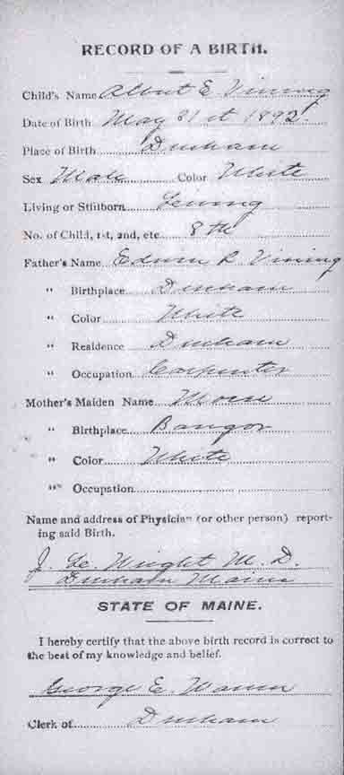
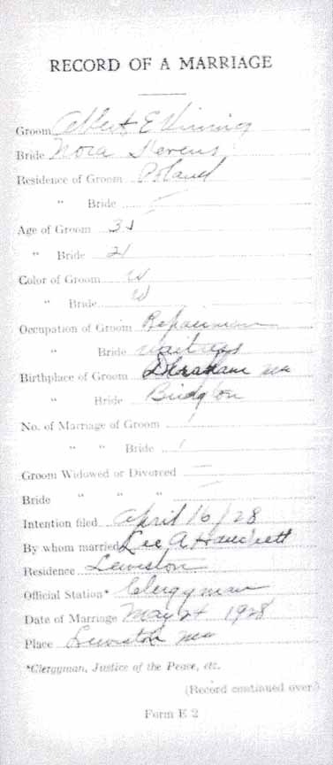
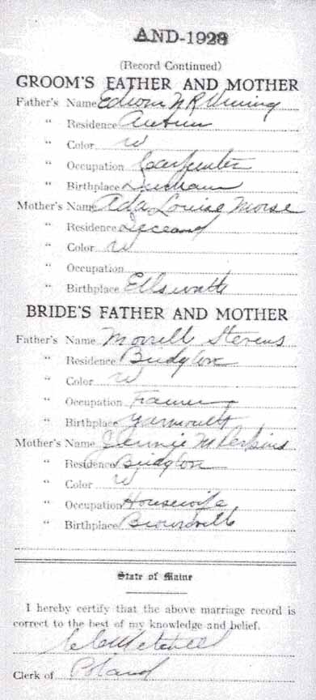
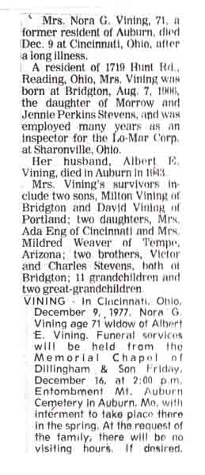
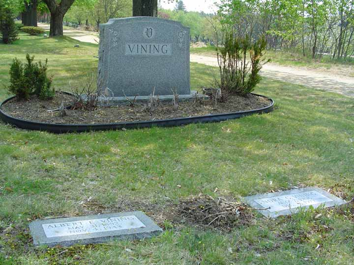
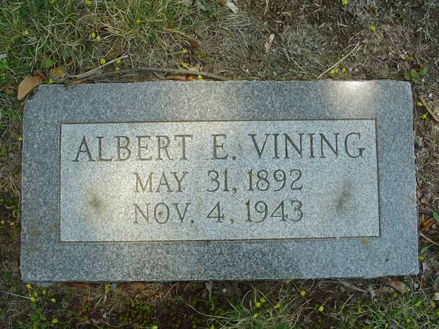
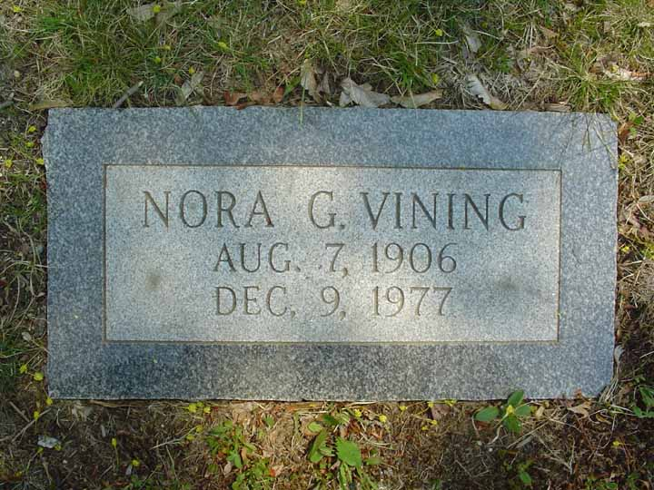

Birth Data
Birth record for Albert Edwin Vining:
Marriage Data
Marriage record for Albert Edwin Vining and Nora Gertrude Stevens:

Census Data
| 1930 | 1940 | |
| Albert Edwin Vining | 38 | 47 |
| Nora Gertrude (Stevens) Vining | 24 | 32 |
| Milton Wayne Vining | 11 m. | 10 |
| Ada Carolyn Vining | 8 | |
| Mildred Carol Vining | 6 m. | |
| David Stevens Vining |


Death Data
Obituary (newspaper not identified) for Nora Gertrude (Stevens) Vining:


